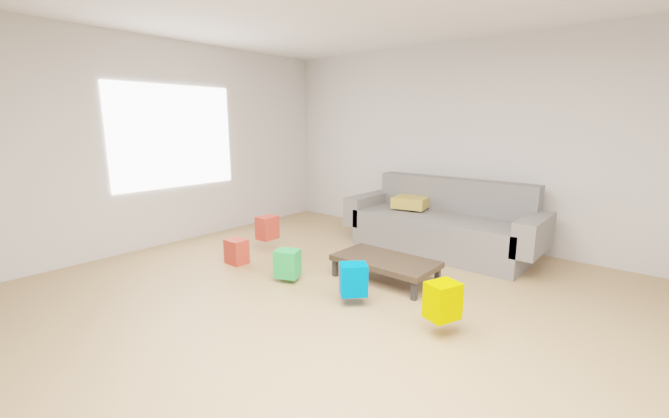
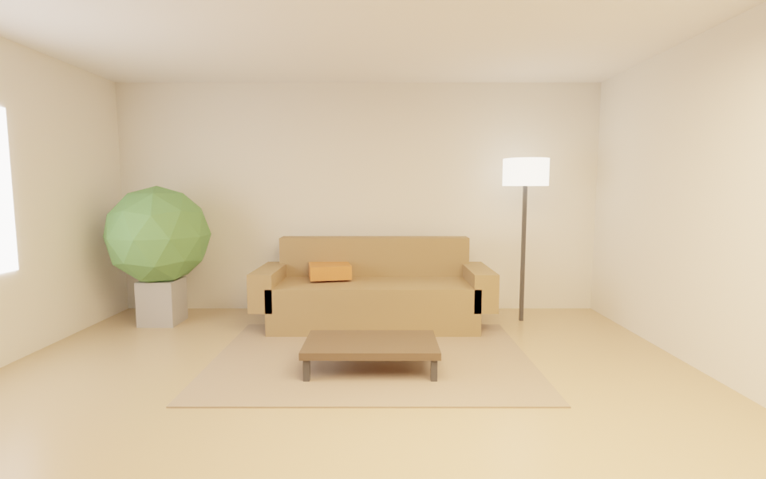
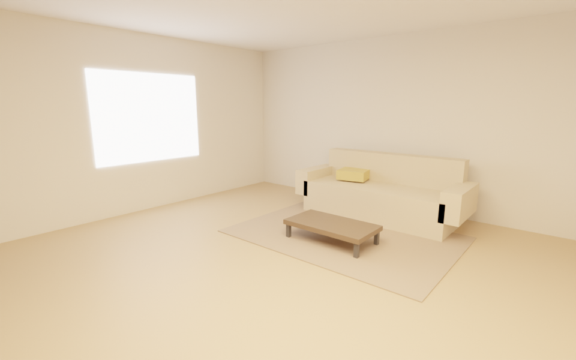
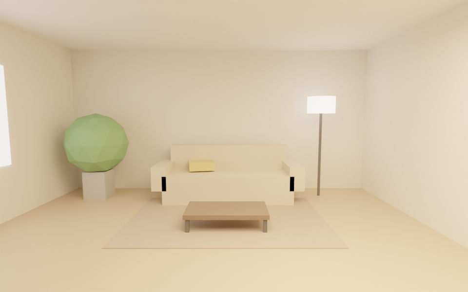
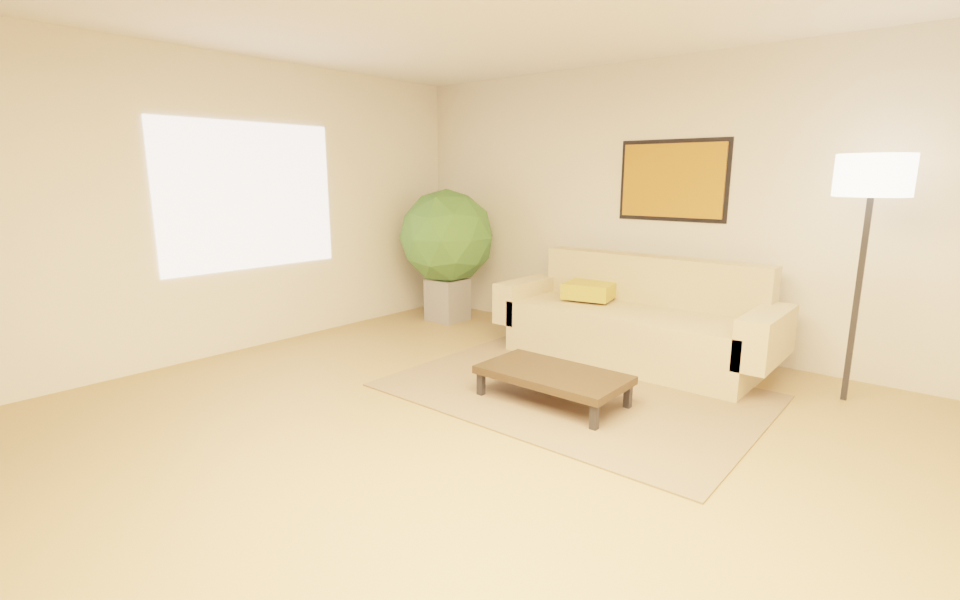
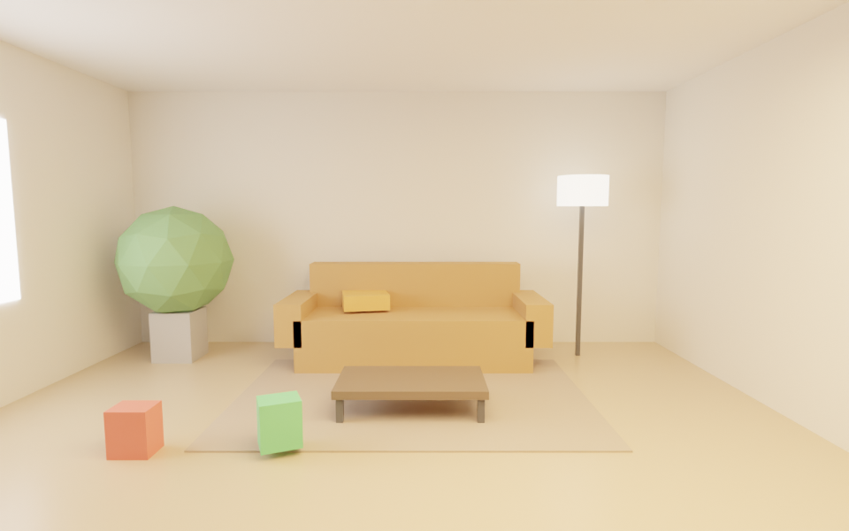
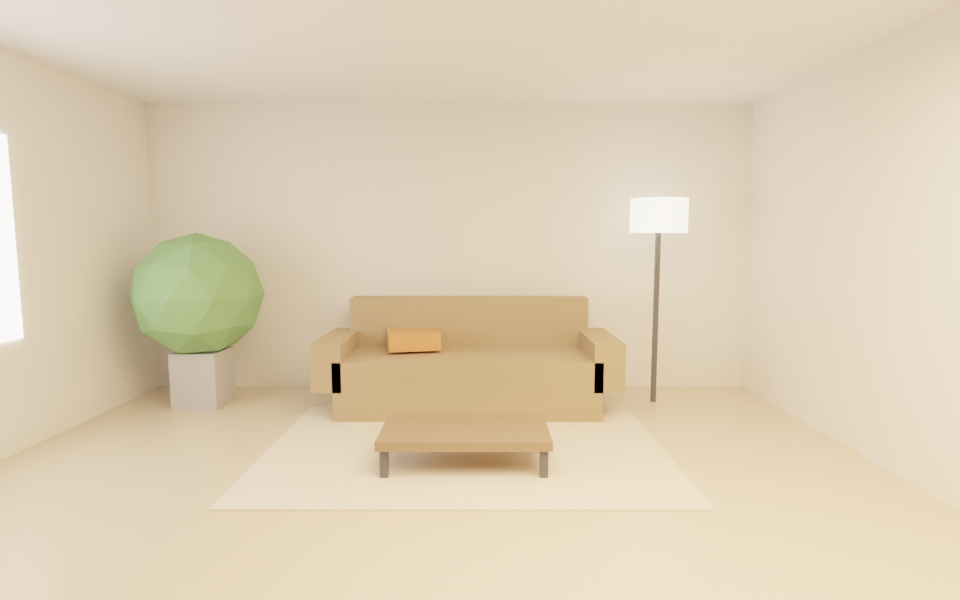

wall_color: #d9d9d9 → #efe8dafloor_roughness: 0.5 → 0.3sofa_color: #6b6b6b → #7a5a3aaccent_color: #c8a04a → #c75b2arug: False → Trueplant: False → Truelamp: False → Truelight_temp_k: 5500 → 3000sun_strength: 6.0 → 5.5clutter: 5 → 0camera: corner → front| r | render | ui | brain | judge | kept | changed | why (Muse) |
|---|---|---|---|---|---|---|---|
| r0 | 0.257 | 0.455 | 0.08 | ✓ | baseline: flat light, grey sofa, clutter | ||
| r1 |  | 0.322 | 0.507 | 0.17 | ✓ | wall_color, sofa_color, rug, light_temp_k, clutter | Removed competing clutter and warmed light and materials to make the sofa the single calm desirable hero. |
| r2 |  | 0.448 | 0.750 | 0.22 | ✓ | plant, lamp, sun_strength, camera | Front crop simplifies the room to one sofa hero, lower sun tames the window blowout, and lamp plus plant add warm desirable focal glow. |
| r3 |  | 0.354 | 0.588 | 0.17 | · | art, art_color, lamp_emit, key_energy, camera | Added warm art as clear focal silhouette with corner diagonal and stronger warm key to boost desire and hold attention. |
| r4 | 0.470 | 0.764 | 0.25 | ✓ | floor_roughness, sofa_color, accent_color, sun_strength | Deepened sofa for dominant silhouette, warmed accent for desire, and stronger sun plus lower roughness for diagonal highlight and visual drive. | |
| r5 |  | 0.452 | 0.754 | 0.22 | · | sofa_color, accent_color, light_temp_k, sun_strength, clutter | Warmer light, stronger sun highlight, richer sofa/accent and styled clutter create a desirable focal seat with a second detail to hold attention. |
| r6 |  | 0.457 | 0.741 | 0.25 | · | wall_color, floor_color, table_color, rug_color | Lightened warm Scandinavian palette with contrasting rug zone to create one calm inviting focal seat. |